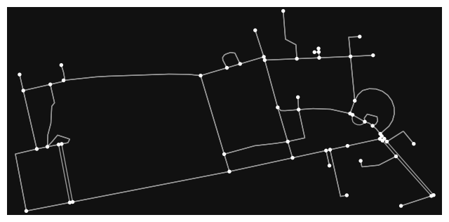
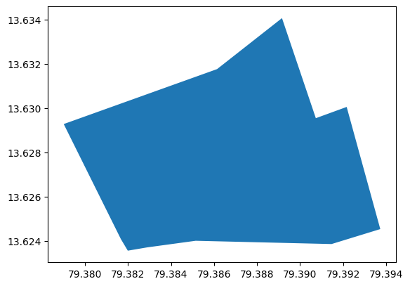
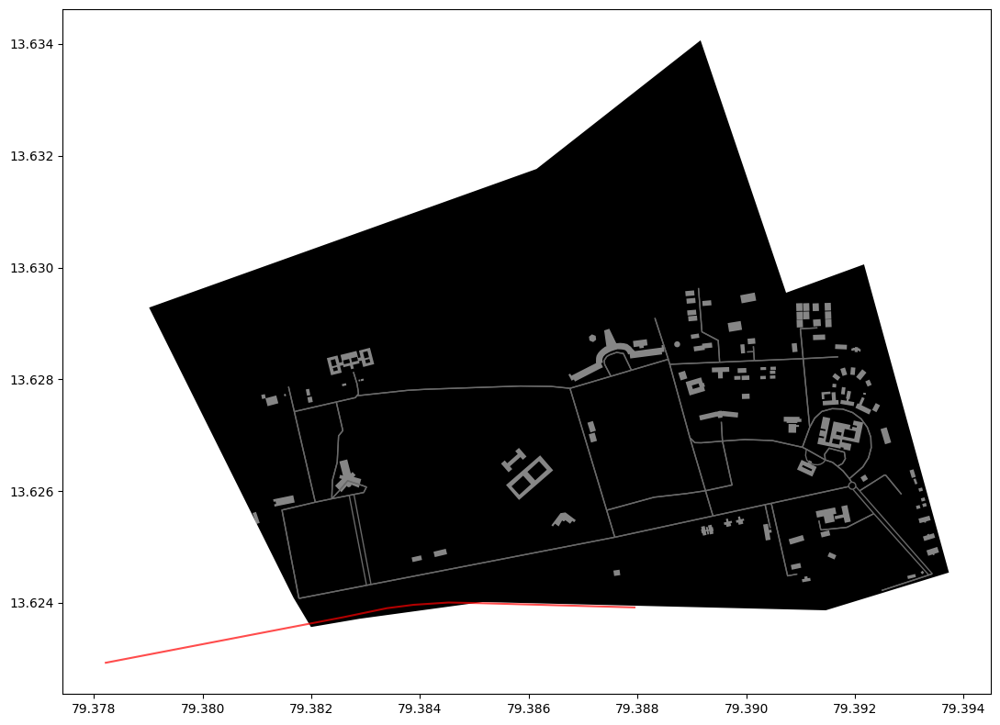
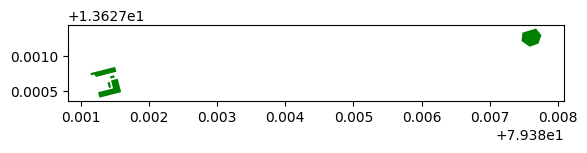
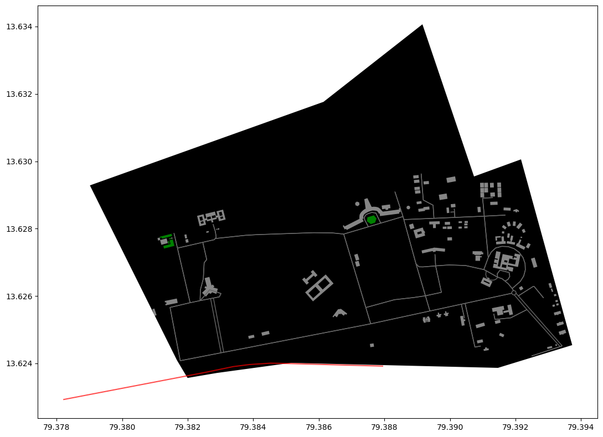

import osmnx as ox
import matplotlib.pyplot as pltOpenStreetMap
- It is an crowd-sourced dataset
- It contains data about streets, buildings, services, landuse etc.
- OSMnx is a package used to retrieve, construct, analyze and visualize street networks from OpenStreetMap and also retrieve data about points of interest such as restaurants, schools and lots of different kind of services.
- It is also easy to conduct network routing based on walking, cycling or driving by combining OSMnx functionalities with a package called NetworkX
Get Street Network Graph for Tirupathi
place_name = "Tirupathi, Andhra Pradesh, India"graph = ox.graph_from_place(place_name)type(graph)networkx.classes.multidigraph.MultiDiGraphfig, ax = ox.plot_graph(graph)
nodes, edges = ox.graph_to_gdfs(graph)nodes.head()| y | x | street_count | geometry | |
|---|---|---|---|---|
| osmid | ||||
| 3726004217 | 13.626082 | 79.391887 | 3 | POINT (79.39189 13.62608) |
| 3726082024 | 13.624080 | 79.381771 | 3 | POINT (79.38177 13.62408) |
| 3726082625 | 13.624315 | 79.383015 | 3 | POINT (79.38302 13.62431) |
| 3726082626 | 13.624330 | 79.383098 | 3 | POINT (79.38310 13.62433) |
| 3726082627 | 13.624499 | 79.393360 | 3 | POINT (79.39336 13.62450) |
edges.head()| osmid | highway | oneway | reversed | length | geometry | tunnel | bridge | |||
|---|---|---|---|---|---|---|---|---|---|---|
| u | v | key | ||||||||
| 3726004217 | 3727759169 | 0 | 368755785 | service | False | True | 102.448 | LINESTRING (79.39189 13.62608, 79.39096 13.62589) | NaN | NaN |
| 3726082692 | 0 | 368765668 | service | True | False | 11.398 | LINESTRING (79.39189 13.62608, 79.39189 13.626... | NaN | NaN | |
| 3726082024 | 3726082625 | 0 | 368755785 | service | False | False | 136.948 | LINESTRING (79.38177 13.62408, 79.38302 13.62431) | NaN | NaN |
| 3726082653 | 0 | 368765683 | service | False | False | 247.024 | LINESTRING (79.38177 13.62408, 79.38146 13.625... | NaN | NaN | |
| 3726082625 | 3726082626 | 0 | 368755785 | service | False | False | 9.070 | LINESTRING (79.38302 13.62431, 79.38310 13.62433) | NaN | NaN |
area = ox.geocode_to_gdf(place_name)type(area)geopandas.geodataframe.GeoDataFramearea| geometry | bbox_north | bbox_south | bbox_east | bbox_west | place_id | osm_type | osm_id | lat | lon | display_name | class | type | importance | |
|---|---|---|---|---|---|---|---|---|---|---|---|---|---|---|
| 0 | POLYGON ((79.37901 13.62928, 79.38167 13.62409... | 13.634066 | 13.623569 | 79.39373 | 79.379014 | 191306545 | way | 369041142 | 13.626914 | 79.386643 | Sri Venkateshwara Veterinary University, Tirup... | amenity | university | 0.718072 |
area.plot()<AxesSubplot: >
Get Building information
tags = {"building":True}buildings = ox.geometries_from_place(place_name,tags)len(buildings)103buildings.head()| nodes | building | geometry | layer | name | ways | type | ||
|---|---|---|---|---|---|---|---|---|
| element_type | osmid | |||||||
| way | 368754138 | [3725992120, 3725992118, 3725992325, 372599232... | yes | POLYGON ((79.38556 13.62655, 79.38560 13.62650... | NaN | NaN | NaN | NaN |
| 368765639 | [3727711369, 3727711372, 3727711373, 372771137... | yes | POLYGON ((79.38762 13.62865, 79.38763 13.62865... | NaN | NaN | NaN | NaN | |
| 368765640 | [3726082631, 3726082641, 3726082638, 372608263... | yes | POLYGON ((79.38655 13.62537, 79.38662 13.62548... | NaN | NaN | NaN | NaN | |
| 368765641 | [3726082662, 3726082681, 3726082697, 372608269... | yes | POLYGON ((79.38255 13.62598, 79.38244 13.62610... | 1 | Admin Office (Dr. Y.S.R. Bhavan) | NaN | NaN | |
| 368765644 | [3726083018, 3726083020, 3726082991, 372608298... | yes | POLYGON ((79.38190 13.62782, 79.38196 13.62783... | NaN | NaN | NaN | NaN |
buildings.shape(103, 7)# List key-value pairs for tags
tags = {"railway":True}# Retrieve restaurants
railway = ox.geometries_from_place(place_name, tags)
# How many restaurants do we have?
len(railway)1fig, ax = plt.subplots(figsize=(12, 8))
# Plot the footprint
area.plot(ax=ax, facecolor="black")
# Plot street edges
edges.plot(ax=ax, linewidth=1, edgecolor="dimgray")
# Plot buildings
buildings.plot(ax=ax, facecolor="silver", alpha=0.7)
# Plot restaurants
railway.plot(ax=ax, color="red", alpha=0.7, markersize=20)
plt.tight_layout()
Get Park Information
tags = {"leisure": "park", "landuse": "grass"}parks = ox.geometries_from_place(place_name, tags)
print("Retrieved", len(parks), "objects")Retrieved 5 objectsparks.head(3)| nodes | landuse | geometry | ||
|---|---|---|---|---|
| element_type | osmid | |||
| way | 368765686 | [3726082943, 3726082942, 3726082954, 372608295... | grass | POLYGON ((79.38144 13.62756, 79.38141 13.62755... |
| 368765687 | [3726082995, 3726082981, 3726082971, 372608299... | grass | POLYGON ((79.38149 13.62773, 79.38150 13.62770... | |
| 368765688 | [3726083023, 3726083010, 3726082983, 372608300... | grass | POLYGON ((79.38150 13.62785, 79.38152 13.62778... |
parks.plot(color='green')<AxesSubplot: >
fig, ax = plt.subplots(figsize=(12, 8))
# Plot the footprint
area.plot(ax=ax, facecolor="black")
# Plot the parks
parks.plot(ax=ax, facecolor="green")
# Plot street edges
edges.plot(ax=ax, linewidth=1, edgecolor="dimgray")
# Plot buildings
buildings.plot(ax=ax, facecolor="silver", alpha=0.7)
# Plot restaurants
railway.plot(ax=ax, color="red", alpha=0.7, markersize=20)
plt.tight_layout()